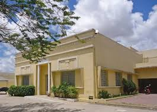

Inaugurada em 2009, a instituição museológica também possui vasto material histórico da formação, avanço e desenvolvimento da cidade de Arapiraca ao longo de seus anos, com fatos importantes e registros fotográficos raros. O local é centro de referência para estudantes tanto de escolas públicas como particulares. Zezito Guedes é folclorista, historiador, escritor e escultor em madeira, gesso e pedra, referência nas Artes do município.
